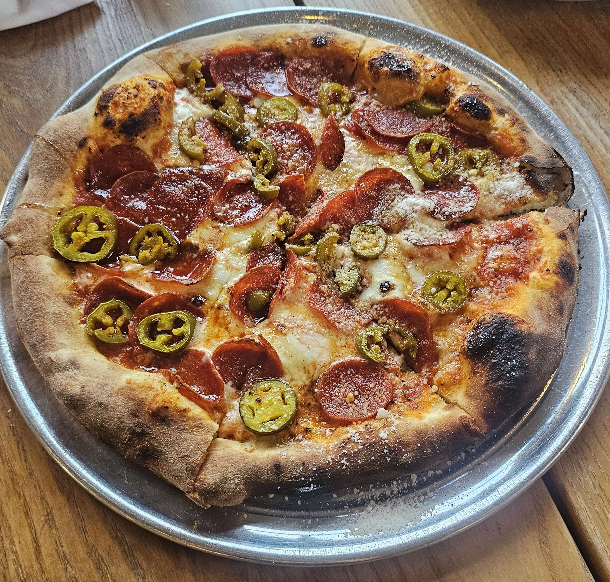
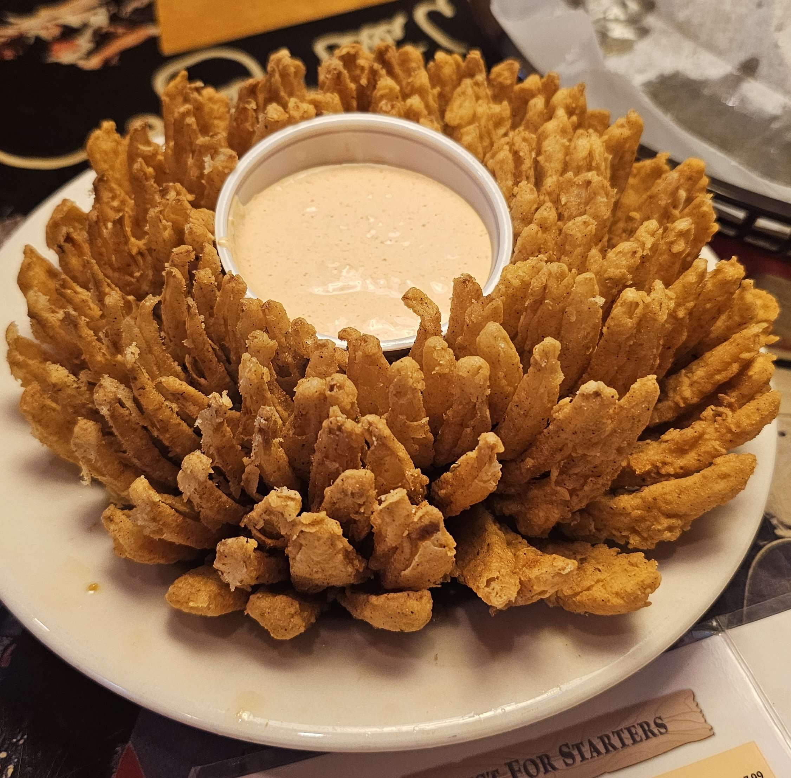
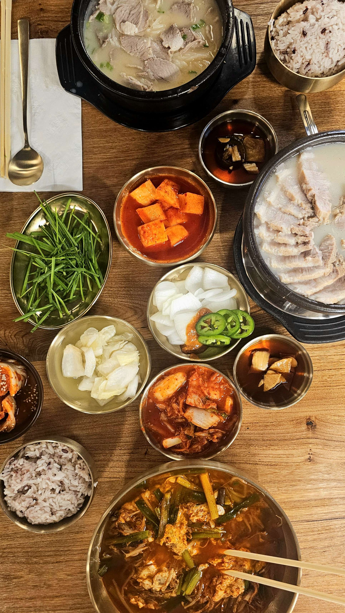

|


|
Stepping Stones Tutoring Organization
During the height of COVID-19, many young students from elementary to high school were struggling to keep up in their academic studies.
Zoom classes were new to all of us at the time, and many students were not able to get the help that they needed academically. Especially in mathematics,
math is an essential course that builds life skills in finance, engineering, and critical thinking and young students were espcially victims of falling behind in this foundational subject.
Me and a couple of my friends decided to get together and found the Stepping Stones Tutoring Organization, an organization aimed to help young students
and supplement their learning in math courses. We developed a system where we would match volunteer tutors with students based on their availability and grade level.
At our peak, we were able to tutor 90+ young students and manage 30+ volunteers. Supporting our community during a time of need was one of the most rewarding experiences I have had, and I am glad that we were able to make a difference in our community.
I unfortunately don't have pictures during this time so enjoy these pictures of food! <3
|

|